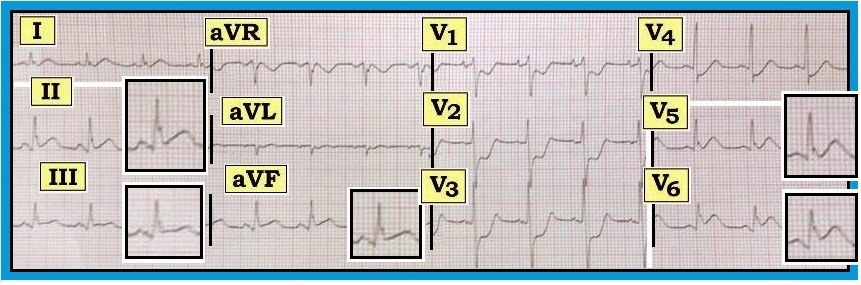
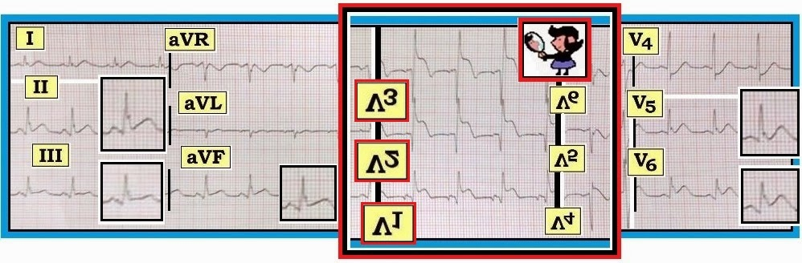
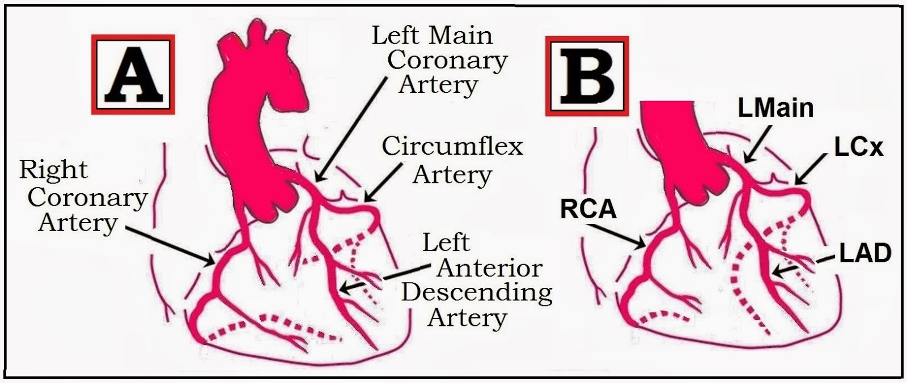
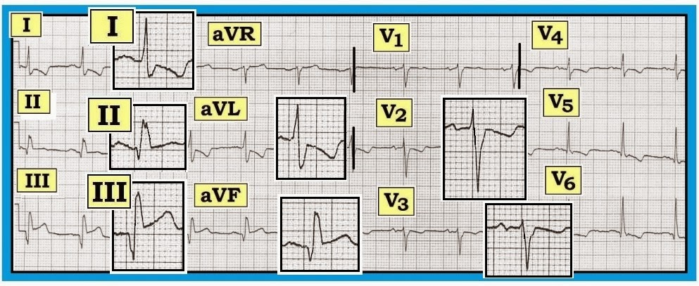

ECG Blog #80 — Đau ngực & giải phẫu động mạch vành
Hãy đọc điện tâm đồ trong Hình 1 — ghi từ một bệnh nhân mới khởi phát đau ngực.
- Xác định (các) vùng nhồi máu cấp.
- Động mạch vành nào nhiều khả năng đang bị tắc cấp?


------------------------------------------
Diễn giải Hình 1:
Nhịp xoang. Các khoảng và trục bình thường. Không lớn buồng tim. Về Thay đổi Q-R-S-T:
- Có sóng q nhỏ ở các chuyển đạo II,III,aVF; và V5,V6.
- Vùng chuyển tiếp bình thường (nằm giữa chuyển đạo V2 và V3) — dù sóng R hơi cao hơn mức thường gặp ở các chuyển đạo V2,V3.
- Có ST chênh lên kín đáo nhưng thật sự ở từng chuyển đạo thành dưới (II,III,aVF) — kèm gợi ý sóng T tối cấp (nhất là ở chuyển đạo II). Một hình ảnh tương tự với điểm J và ST chênh lên nhẹ cũng thấy ở các chuyển đạo V5,V6 — kèm gợi ý sóng T tối cấp ở các chuyển đạo này.
- Có ST chênh xuống rõ rệt ở các chuyển đạo từ V1 đến V4.
Nhận định: Nhịp xoang kèm STEMI dưới-sau-bên cấp (nhồi máu cơ tim có ST chênh lên – ST Elevation Myocardial Infarction). Cần kích hoạt phòng thông tim (cath lab). Chúng tôi nghi ngờ tắc LCx (động mạch mũ trái – Left Circumflex Artery) cấp.
- Dù sóng q ở các chuyển đạo dưới-bên nhỏ và hẹp — đây lại chính là những chuyển đạo có ST chênh lên kèm sóng T tối cấp. Dù chúng có thể là sóng q vách bình thường — nhiều khả năng hơn hẳn là chúng phản ánh một nhồi máu cấp đang diễn tiến. Dù thế nào đi nữa — chúng ta sẽ sớm biết câu trả lời (nếu sóng q lớn dần khi nhồi máu tiến triển – hoặc – nếu chúng biến mất sau tái tưới máu).
- Hình ảnh điện tâm đồ ở các chuyển đạo V1,V2,V3 gợi ý mạnh nhồi máu thành sau cấp đi kèm. Chúng tôi nói vậy dù thực tế là không chuyển đạo nào trong 12 chuyển đạo chuẩn nhìn trực tiếp thành sau của LV (thất trái – Left Ventricle). Vì vậy — để chẩn đoán MI thành sau cấp, ta phải hoặc: i) Ghi các chuyển đạo bổ sung nhìn trực tiếp thành sau (= các chuyển đạo V7,V8,V9); hoặc ii) Làm Nghiệm pháp “Gương” (Mirror Test) (lật ngược bản ghi và giơ lên trước nguồn sáng — cách này cho ta hình ảnh soi gương của các chuyển đạo thành trước — Hình 2).


------------------------------------------
Tuần hoàn Vành:
Nguyên nhân thường gặp nhất của MI cấp là tắc hoàn toàn đột ngột một động mạch vành lớn. Vùng tim bị ảnh hưởng sẽ tùy thuộc vào sự phân bố tưới máu cho vùng đó từ tuần hoàn vành.
- Nhận biết kịp thời tình trạng tắc động mạch vành cấp và nhanh chóng khởi động điều trị tái tưới máu là thiết yếu để có kết cục tối ưu. Vì thế — đánh giá điện tâm đồ ban đầu là vô giá. Hiểu rõ giải phẫu động mạch vành bình thường và các biến thể thường gặp giúp quá trình này dễ dàng hơn.
Trong Hình 3 — chúng tôi trình bày tổng quan dạng sơ đồ về giải phẫu động mạch vành bình thường (Ô A). Hai mạch máu chính cấp máu cho tim là động mạch vành phải và động mạch vành trái. Chúng thường xuất phát lần lượt từ xoang động mạch chủ phải và trái.
- Ở đa số bệnh nhân (80-90%) — RCA (động mạch vành phải – Right Coronary Artery) là mạch ưu thế cấp máu cho RV (thất phải – Right Ventricle) — rồi tiếp tục thành PDA (động mạch liên thất sau – Posterior Descending Artery) chạy dọc mặt dưới của tim (mạch chấm chấm không ghi tên xuất phát từ RCA trong Ô A) để cấp máu cho thành dưới và thành sau của LV (thất trái – Left Ventricle). Không vẽ trong hình — động mạch nút nhĩ thất (AV nodal artery) thường được RCA cấp máu nhất.
- Như gợi ý trong Ô A — LMain (thân chung động mạch vành trái – Left Main Coronary Artery) thường là một mạch ngắn (<10mm), sau đó chia đôi thành LAD (động mạch liên thất trước – Left Anterior Descending Artery) và LCx (động mạch mũ trái – Left Circumflex Coronary Artery).
- Ở ~15% bệnh nhân — có tuần hoàn “ưu thế trái” (thể hiện trong Ô B của Hình 3). Khi đó — RCA là một mạch nhỏ hơn so với hình vẽ trong Ô A. Để bù lại — LCx thường lớn hơn và cho ra PDA (mạch chấm chấm lớn không ghi tên xuất phát từ LCx trong Ô B). Trong tuần hoàn ưu thế trái — thành dưới và/hoặc thành sau của LV do LCx cấp máu.
- Điểm lâm sàng MẤU CHỐT: Sự tồn tại của tuần hoàn ưu thế trái ở ~15% bệnh nhân giải thích vì sao MI thành dưới và thành sau không phải lúc nào cũng do tắc cấp RCA. Tương tự, vì động mạch nút nhĩ thất có thể do LCx cấp máu trong tuần hoàn ưu thế trái — blốc AV đôi khi cũng có thể xảy ra khi tắc LCx (chứ không phải RCA).


------------------------------------------
Xác định Động mạch “Thủ phạm”:
Dù việc xác định chắc chắn động mạch “thủ phạm” (mạch bị tắc cấp) sẽ có được khi thông tim — đánh giá điện tâm đồ ban đầu có thể cung cấp những manh mối quan trọng cho bác sĩ chụp mạch, giúp biết cần tìm ở đâu.
- Với sự hiện diện của nhồi máu thành dưới cấp không kèm ST chênh lên ở thành trước trong Hình 1 — động mạch “thủ phạm” gần như chắc chắn hoặc là RCA (động mạch vành phải – Right Coronary Artery) hoặc là LCx (động mạch mũ trái – Left Circumflex Coronary Artery).
Các dấu hiệu điện tâm đồ do tắc RCA cấp sẽ thay đổi tùy theo: i) Bệnh nhân có tuần hoàn ưu thế phải hay trái; ii) Vị trí tắc tương đối trên RCA (tức là tắc đoạn gần hay đoạn xa hơn); iii) Các nhồi máu trước đó có thể đã xảy ra; và, iv) Tình trạng tuần hoàn bàng hệ. Để đơn giản — chúng tôi mô tả các dấu hiệu điện tâm đồ dự kiến với giả định không có nhồi máu trước đó và không có thay đổi tuần hoàn bàng hệ.
- Ở 80-90% bệnh nhân có tuần hoàn ưu thế phải (Ô A trong Hình 3) — biểu hiện điển hình nhất của tắc RCA cấp là ST chênh lên ở cả 3 chuyển đạo thành dưới (II,III,aVF) = MI thành dưới cấp.
- MI RV (thất phải – Right Ventricular) cấp — nhiều khả năng gặp khi tắc RCA đoạn gần. Tắc RCA đoạn xa hơn có thể không ảnh hưởng tới phần lớn thất phải.
- ĐIỂM THEN CHỐT (PEARL): Gợi ý tắc RCA đoạn gần khi ST chênh lên ở chuyển đạo III nhiều hơn ở chuyển đạo II (nhất là khi có ST chênh xuống rõ rệt ở chuyển đạo aVL). Hình ảnh này thấy trong Hình 4. Ngược lại — nghi ngờ tắc LCx trong tuần hoàn ưu thế trái khi có MI thành dưới với ST chênh lên ở chuyển đạo III ít hơn và ST chênh xuống ở chuyển đạo aVL ít hơn (nhất là khi có ST chênh lên đáng kể ở các chuyển đạo V5,V6).
- MI thành sau — thường gặp khi tắc RCA (vì RCA thường cấp máu cho cả thành dưới và thành sau của LV). MI thành sau cũng có thể gặp khi tắc LCx NẾU có tuần hoàn ưu thế trái. Trong cả hai trường hợp — thường sẽ có bằng chứng điện tâm đồ của MI thành dưới khi có MI thành sau.


------------------------------------------
Các điểm
Bổ sung về
Tắc RCA Cấp:
Ghi nhớ những vùng tim
thường do RCA cấp máu nhất giúp dễ nhận ra tắc cấp
mạch này (Hình 4):
- Chuyển đạo III hướng về bên phải nhiều hơn (ở +120 độ) so với chuyển đạo II (ở +60 độ). Do đó — tắc cấp RCA nhìn chung gây ST chênh lên nhiều hơn ở chuyển đạo III so với chuyển đạo II (Hình 4).
- Góc nhìn điện học của chuyển đạo aVL gần như đối diện với chuyển đạo III. Do đó — hình dạng của ST chênh xuống soi gương ở chuyển đạo aVL thường trông như hình ảnh gương đối nghịch của ST chênh lên ở chuyển đạo III. Các thay đổi sóng ST-T ở aVL thường rõ rệt khi tắc RCA đoạn gần — và nhìn chung nổi bật hơn so với ở chuyển đạo I.
- MI thành sau được gợi ý trong Hình 4 — vì “Nghiệm pháp Gương” dương tính ở chuyển đạo V2 (tức là lật ngược chuyển đạo V2 sẽ cho ra sóng Q kèm ST chênh lên tối cấp nhẹ nhưng thật sự ở chuyển đạo này).
- LƯU Ý: MI thành sau đi kèm có thể gặp khi MI thành dưới cấp do hoặc tắc RCA hoặc tắc LCx trong tuần hoàn ưu thế trái. Tuy nhiên, MI RV (thất phải – Right Ventricular) cấp đi kèm sẽ khu trú “động mạch thủ phạm” vào RCA — vì thất phải không do LCx (động mạch mũ trái – Left Circumflex Artery) cấp máu. Dù cần dùng các chuyển đạo bên phải để chẩn đoán xác định MI RV cấp — đôi khi chuyển đạo V1, vốn là chuyển đạo nằm bên phải, cũng cho gợi ý rằng có thể có MI RV — NẾU có ST dạng vòm (coving) hoặc chênh lên nhẹ ở chuyển đạo V1 nhưng ST chênh xuống ở chuyển đạo V2.
- Vượt ra ngoài phần cốt lõi: Chúng tôi nghi ngờ có thể còn có MI RV cấp đi kèm trong Hình 4 — vì sóng ST-T ở chuyển đạo V1 tương đối phẳng. Bình thường, khi MI thành sau cấp — sóng ST-T chênh xuống trông giống nhau ở mỗi chuyển đạo thành trước (V1,V2,V3). Ngược lại, khi đồng thời có MI RV cấp — ST chênh lên bên phải ở chuyển đạo V1 triệt tiêu một phần ST chênh xuống lẽ ra thấy được do nhồi máu thành sau. Điều cốt lõi: Hãy nghi ngờ MI RV cấp đi kèm MI dưới-sau cấp do tắc RCA đoạn gần — NẾU bạn thấy đoạn ST dạng vòm kèm ST chênh lên nhẹ ở chuyển đạo V1. Việc thấy đoạn ST phẳng (thay vì chênh xuống) ở chuyển đạo V1 (như thấy trong Hình 4) — gợi ý có thể có một phần triệt tiêu ST chênh xuống ở V1 bởi ST chênh lên do RV cấp. NẾU cần biết — các chuyển đạo bên phải sẽ trả lời câu hỏi này.
- Ghi chú lâm sàng: Nên nhớ rằng blốc AV độ 2, Mobitz loại I — thường gặp nhất khi tắc RCA cấp (vì RCA thường cấp máu cho động mạch nút nhĩ thất). Dù vậy — Mobitz I đôi khi có thể gặp khi tắc LCx cấp trong tuần hoàn ưu thế trái (khi đó động mạch nút nhĩ thất thường sẽ do LCx cấp máu).
Quay lại HÌNH 1: Tắc Động mạch Mũ cấp
Với những kiến thức nền trên — giờ ta quay lại điện tâm đồ ban đầu trong Hình 1 mà chúng tôi đưa ra ở đầu case này (được lặp lại bên dưới trong Hình 5):
- Có MI dưới-sau-bên cấp.
- Động mạch “thủ phạm” nhiều khả năng là động mạch Mũ (LCx) ưu thế trái vì: i) ST chênh lên ở chuyển đạo III ít hơn ở chuyển đạo II; ii) Không có ST chênh lên ở chuyển đạo aVL; iii) Không có gợi ý nào về tổn thương RV cấp (ST chênh xuống rõ ở V1 — trong khi nếu có tổn thương RV đi kèm thì ta sẽ chờ đợi đoạn ST phẳng hoặc dạng vòm kèm chênh lên nhẹ ở V1); và, iv) Có ST chênh lên ở V5,V6 — và mức ST chênh lên ở chuyển đạo V6 rõ ràng nhiều hơn ở chuyển đạo III.

----------------------------------
Liên kết tới Mục 10.0 — tải pdf về chẩn đoán MI cấp trên điện tâm đồ (trích từ ECG-2014-ePub) của chúng tôi.
- Thay đổi điện tâm đồ trong MI cấp — bắt đầu ở Mục 10.1 -
- Bàn về Tuần hoàn Vành (và xác định động mạch "thủ phạm") — bắt đầu ở Mục 10.16 -
- Nghiệm pháp Gương (Mirror Test) (MI thành sau) — bắt đầu ở Mục 10.33 -
- Xem ECG BLOG #82 — về một case tắc LAD so với LMain -
----------------------------------